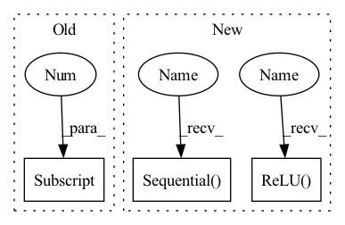

Pattern ID :1621

Before Change
self.p1_1 = nn.Conv2d(in_c, c1, kernel_size=1)
// 线路2，1 x 1卷积层后接3 x 3卷积层
self.p2_1 = nn.Conv2d(in_c, c2[0], kernel_size=1)
self.p2_2 = nn.Conv2d(c2[0], c2[1], kernel_size=3, padding=1)
// 线路3，1 x 1卷积层后接5 x 5卷积层
self.p3_1 = nn.Conv2d(in_c, c3[0], kernel_size=1)
self.p3_2 = nn.Conv2d(c3[0], c3[1], kernel_size=5, padding=2)
After Change
def __init__(self, in_planes, n1x1, n3x3red, n3x3, n5x5red, n5x5, pool_planes):
super(Inception, self).__init__()
// 1x1 conv branch
self.b1 = nn.Sequential(
nn.Conv2d(in_planes, n1x1, kernel_size=1),
nn.BatchNorm2d(n1x1),
nn.ReLU(True),
)
// 1x1 conv -> 3x3 conv branch
self.b2 = nn.Sequential(
nn.Conv2d(in_planes, n3x3red, kernel_size=1),
nn.BatchNorm2d(n3x3red),
nn.ReLU(True),
nn.Conv2d(n3x3red, n3x3, kernel_size=3, padding=1),
nn.BatchNorm2d(n3x3),
nn.ReLU(True),
)
// 1x1 conv -> 5x5 conv branch
self.b3 = nn.Sequential(
nn.Conv2d(in_planes, n5x5red, kernel_size=1),
nn.BatchNorm2d(n5x5red),
nn.ReLU(True),
// 2个3x3卷积代替1个5x5卷积
nn.Conv2d(n5x5red, n5x5, kernel_size=3, padding=1),
nn.BatchNorm2d(n5x5),
nn.ReLU(True),
nn.Conv2d(n5x5, n5x5, kernel_size=3, padding=1),
nn.BatchNorm2d(n5x5),
nn.ReLU(True),
)
// 3x3 pool -> 1x1 conv branch
self.b4 = nn.Sequential(
nn.MaxPool2d(3, stride=1, padding=1),
nn.Conv2d(in_planes, pool_planes, kernel_size=1),
nn.BatchNorm2d(pool_planes),
nn.ReLU(True),
)
def forward(self, x):
In pattern: SUPERPATTERN
Frequency: 3
Non-data size: 3
Instances
Fragment ID: 2970924
Project Name: datawhalechina/dive-into-cv-pytorch
Commit Name: d7e5c8335c2babf3ca45d2327bc74c2194b0dc59
Time: 2020-05-21
Author: qiangzibro@gmail.com
File Name: beginner/chapter02_image_classification_introduction/2.2_introduction_of_image_classification/2.2.2_classical_cnn_models/GoogLeNet/GoogLeNet.py
Class Name: Inception
Method Name: __init__
Parent Class: nn.Module
Fragment ID: 2970927
Project Name: datawhalechina/dive-into-cv-pytorch
Commit Name: d7e5c8335c2babf3ca45d2327bc74c2194b0dc59
Time: 2020-05-21
Author: qiangzibro@gmail.com
File Name: beginner/chapter02_image_classification_introduction/2.2_introduction_of_image_classification/2.2.2_classical_cnn_models/GoogLeNet/GoogLeNet.py
Class Name: Inception
Method Name: __init__
Parent Class: nn.Module
Fragment ID: 2970915
Project Name: youtalk/iknet-open-manipulator-x
Commit Name: 492ac3f9080782b43c9961a321689afeed47805c
Time: 2021-05-03
Author: yutaka.kondo@youtalk.jp
File Name: iknet.py
Class Name: IKNet
Method Name: __init__
Parent Class: nn.Module